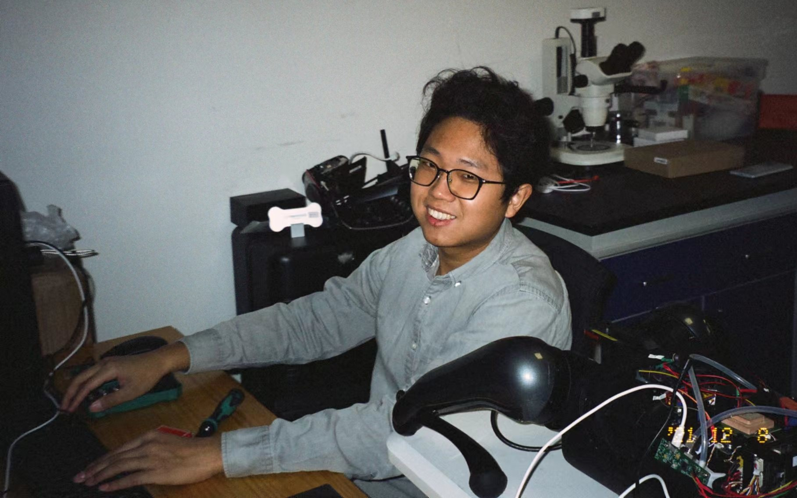

Gordon Yu
于港
Master Student
Academy of Arts & Design, Tsinghua University
The Future Laboratory, Tsinghua University
ABOUT
I'm currently a master student in the Academy of Arts & Design, Tsinghua University, advised by Prof. Yingqing Xu. I earned my bachelor degree of Creative Design and Intelligent Engineering (CDIE) from Xinya College, Tsinghua University. My goal is to create innovative technologies and actually bring them to people's life. I mean real-world application.
Research Focus
Olfactory Computing

Olfactory computing refers to using the sensing technology to digitalize odor information. Our team conduct comprehensively research in gas sensors, electronic nose systems, odor database, signal processing & algorithm, and human olfactory sensory evaluation.
AI-empowered Hardware
AI-empowered hardwares feature with typical natral language interaction and context-aware technologies based on large language models, with a compact, wearable, and cloud-based hardware appearance. They are entrances of AI-based applications.
Human Computer Interaction
HCI research is a multidisciplinary field of study that focuses on the design of computer technology and the interaction between humans and computing systems. Our goal is to improve how humans interact with technology and to invent new technologies.
PROJECT

Universal Olfactory Sensing Project
In this work, we present a miniaturized E-nose system capable of real-time, on-board classification of commonly encountered odors. This device, equipped with a metal oxide semiconductor (MOS) gas sensors array, runs the whole odor inference process on board. Taking 53 common substances as targets, the device can identify these odorants with the highest accuracy of 95.0% and the total analytical time for collection the samples' volatile, odor fingerprints encoding, and machine learning inferring on board is merely 7 seconds.
Precise Cook Based on Odors
Olfactory plays an important roles in human sensing of food flavors. Through odors, we can distinguish whether the food is delicious or unpleasant. In this project, we are devoted to design an odor sensing system that can identify the cooking state of food during the baken and roasting process, including raw state, best-cooking state, or overcooked state. Also, our team is curious about what the molecular components are behind the cooking aroma, both pleasant and unpleasant. learn more
Helium Aerostat Design
Although current unmanned aerial vehicles (UAVs) can perform a variety of tasks in outdoor environment, they are difficult to be used in indoor scenes. Due to the configuration of propellers, ordinary quadrotor UAVs become very dangerous in indoor environment and places with people. They are easy to crash. Their noise and airflow also greatly affect the environment. Under the background of these problems, I proposed an indoor aerostat. The aerostat utilized two airbags to move in the vertical direction. The main airbag was inflated with Helium to gain buoyancy, and the auxiliary airbag was inflated with air to change mass itself. The work mainly includes four parts: mechanical design, electronic hardware design, algorithm design, and appearance design. vedio
vedio
Publication
- Chen, Y., Shen, K., Yu, G., Qiao, Y., Yan, X., Zhang, W., & Xu, Y. (2021, October). EEG Based Artistic Visualization of Dreams. In The Ninth International Symposium of Chinese CHI (pp. 144-151)
- (Under Review, Co-first Author) Yuchi Sun, Gang Yu, Qi Lu, Haoxuan Han, Jia-Wei Yang, Yingqing Xu. An Electronic Nose Device with Rapid and Universal Odor Detection Capability. Sensors and Actuators B: Chemical.
- Xu Y, Yu G, Sun Y, et al. Odor based cooking state recognition method[P]. Beijing (Invention Patent)
- Xu Y, Yu G, Sun Y, et al. Odor recognition model training method and device[P]. Beijing (Invention Patent)
- Yu G, Li X,Gao P, et al. Itergrated Bathing Suits for Astronauts in Zero-g environment[P]. Beijing: CN216363721U, 2022-04-26. (Utility Model Patent)
Contact Me
- E-mail: yg21@mails.tsinghua.edu.cn / gang.y97@outlook.com
- Wechat: yugang16
- X: @gordon7yu
- Address: Beijing, China